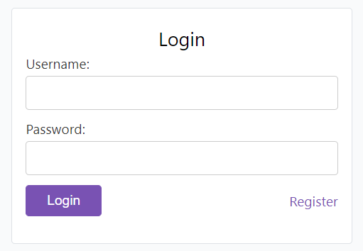
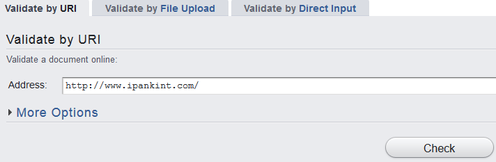
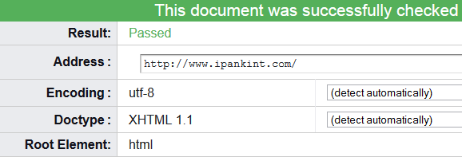
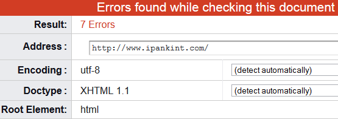
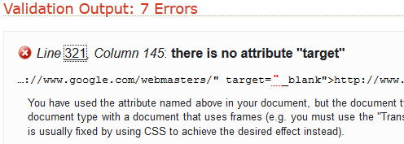

HTML Lanjutan dan Validasi Markup HTML
# Penjelasan tentang Form dalam HTML
Dalam sebuah website biasanya terdapat satu atau lebih form, seperti form pencarian, registrasi dan lain sebagainya. Form ini biasa digunakan untuk mengumpulkan data dari pengunjung website. Sebuah form, boleh jadi memiliki beragam kontrol, mulai dari text input, Combo box, Button dan lain sebagainya. Kita akan mempelajari sebagian kontrol yang disebutkan diatas karena kontrol di atas adalah yang paling sering digunakan dalam halaman web.
Pertama-tama, pembuatan sebuah form diawali dengan tag <form>, dan setiap kontrol-kontrol yang dibutuhkan ditempatkan di dalam tag ini.
<form>
<h1>Formulir Pendaftaran</h1>
</form>
# Control-control Form
Setiap control pada form dapat dibuat dengan menggunakan tag <input>. Dan yang membedakan tipe dari control tersebut berada pada atribut type (tipe kontrol). Berikut ini adalah sebagian tipe kontrol yang biasa ditemui
Label
Label digunakan untuk memberikan name atau keterangan pada setiap input yang ada. Label sangat berguna karena memberikan informasi tentang peruntukkan form. Berikut adalah contoh pembuatan label:
<form>
<label for="nama">Nama Kamu</label>
</form>
dan berikut adalah hasilnya:
Text
Control input ini dapat diisi dengan teks yang memiliki kata yang tidak terlalu panjang/hanya satu baris, biasa digunakan dalam form pencarian, nama dan lain sebagainya.Berikut adalah contoh pembuatan text yang dikombinasikan dengan label:
<form>
<label for="nama">Nama Kamu : </label>
<input type="text" name="nama" />
</form>
dan berikut adalah hasilnya:
Jika text input yang akan ditampilkan ingin memiliki nilai, maka tuliskan nilai tersebut di dalam atribut value.
<form>
<label for="nama">Nama Kamu : </label>
<input type="text" name="nama" value="Aditya"/>
</form>
Dengan begitu, ketika halaman dibuka, text input ini secara otomatis akan terisi dengan nilai dari atribut value, berikut adalah hasilnya:
Text Area
Sama halnya dengan Input Text, namun textarea dapat diisi lebih dari satu baris, cocok digunakan untuk isian yang panjang, seperti alamat, deskripsi, atau biodata. Berbeda dengan kontrol lainnya yang menggunakan tag
<input>, text area memiliki tag sendiri yaitu <textarea></textarea>. Dan apa yang terdapat di dalam tag ini adalah value dari kontrol tersebut
<form>
<label for="alamat">Alamat Kamu : </label>
<textarea name="alamat"/></textarea>
</form>
dan beginilah hasilnya:
btw, text area bisa diubah sizenya menyesuaikan jumlah textnya
Combo Box
Combo Box adalah kontrol yang memiliki pilihan ketika diklik. Pembuatannya sama seperti pembuatan Daftar/List namun dengan tag yang berbeda.
<form>
<label for="provinsi">Provinsi : </label>
<select name="provinsi"/>
<option>Jawa Tengah</option>
<option>Jawa Timur</option>
<option>Jawa Barat</option>
</select>
</form>
dan beginilah hasilnya:
Submit/Button
Submit atau Button, berupa tombol yang dapat di klik. Penggunaan atribut value pada kontrol ini akan merubah text yang ada di dalamnya.
<form>
<input type="Submit" name="kirim" value="kirim" />
</form>
Hasilnya:
Form Lengkap
# Semantic pada HTML
Semantik berarti makna yang terkandung dari suatu kata. Dalam HTML, semantik berarti makna yang terkandung dari suatu tag HTML. Seperti pada contoh kasus sebelumnya, penggunaan tag <em> lebih memiliki nilai semantik dari pada tag <i>.
Pada dasarnya, Gunakanlah tag-tag HTML sesuai dengan maksud/fungsi dari tag HTML tersebut, Jangan menggunakan suatu tag HTML karena tag tersebut memiliki penampilan berbeda.
Misalnya, penggunaan tag <table>. Tag ini berfungsi untuk membuat suatu tabel atau data tabular, penggunaan diluar itu adalah salah, seperti penggunaan tag table untuk pembuatan layout web.
Penulisan dokumen HTML yang semantik ditujukan agar dokumen HTML dapat dipahami oleh komputer, karena pada dasarnya cara berfikir komputer berbeda dengan cara berfikir manusia.
Manusia bisa memahami suatu dokumen dengan adanya tanda baca, atau formatting (seperti teks miring tebal). Berbeda dengan komputer, dan pada kasus ini tag-tag HTML lah yang menjadi tanda baca yang akan membantu komputer untuk memahami dokumen HTML.
Kembali kepada penting tidaknya semantik, boleh jadi dokumen yang semantik dapat mempermudah sistem komputer untuk mengolah informasi dalam dokumen untuk keperluan tertentu, misalnya untuk keperluan Mesin Pencarian (Search Engine) agar hasil pencarian lebih akurat dan sesuai dengan yang diinginkan.
Catatan
Contoh semantic pada html juga bisa ditemukan pada penulisan tag seperti <header>, <footer>, <aside>, <article> yang intinya memberi makna pada struktur HTML.
# Validasi Markup HTML
Validasi markup adalah proses dimana kode HTML kita divalidasi apakah sudah benar atau belum oleh aplikasi validator dari W3C6. Validasi ini sangatlah diperlukan untuk memeriksa apakah ada yang salah dengan markup HTML yang telah kita buat atau ada beberapa bagian yang terlewat seperti penutup tag, atribut dan lain sebagainya.
Sebagian orang berpendapat bahwa markup HTML yang valid akan mempercepat proses loading website dan lebih bersahabat dengan Search Engine.
Markup sederhananya merupakan sistem atau penandaan yang digunakan untuk memformat karakter dan obyek serta pembentukan web atau blog dalam pemrograman HTML. Dengan adanya markup ini web bisa dibangun sedemikian rupa hingga mampu mengalami perkembangan pesat.
Tujuan utama dari validasi HTML blog kita adalah untuk mengetahui error atau kesalahan apa saja yang ada pada blog kita. Setelah mengetahui, diharapkan kita bisa melakukan koreksi terhadap kesalahan tersebut. Dengan adanya koreksi tersebut, kesalahan-kesalahan yang ada bisa diminimalkan.
Validasi dan cek error pada markup blog kita dilakukan dengan menggunakan tools yang disediakan oleh W3C (World Wide Web Consortium). W3C ini bisa dibilang sebagai penentu standar untuk pengembangan web secara global. Jadi untuk pemrograman pembuatan web harus mengikuti standar yang ditentukan oleh W3C ini.
Untuk cek error validasi HTML, bisa gunakan langkah-langkah berikut
- Kunjungi alamat web ini : http://validator.w3.org/
- Klik Validate by URL lalu masukkan URL atau alamat blog anda pada isian “address”
- Klik pada “More Option” centang opsi yang anda ingin tahu. Admin sarankan untuk mencentang opsi “Show Source” agar dapat melihat detail bagian mana yang salah
-
Klik “Check” atau Validate
 -
Jika tidak ada Error, akan ada tulisan “Passed” berwarna hijau
 -
Jika terdapat Error, maka akan muncul tulisan berwarna merah dan menunjukkan jumlah yang Error
 -
Scroll kebawah, maka akan muncul list Error beserta penjelasan dan kode sumber blog yang anda masukkan tadi.
 - Jika ada kesalahan, segera perbaiki semampu anda.
Kesalahan-kesalahan tersebut jika dibiarkan bisa menimbulkan kesalahan pembacaan, baik oleh browser, mesin pencari, maupun reader yang lain. Jika pembacaan terhadap blog kita baik, maka akan berpengaruh pula pada hal-hal lain, misalnya SEO on-page yang lebih baik ataupun tampilan yang sempurna.